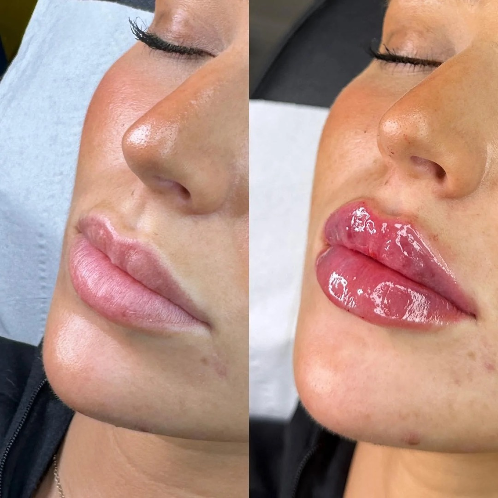
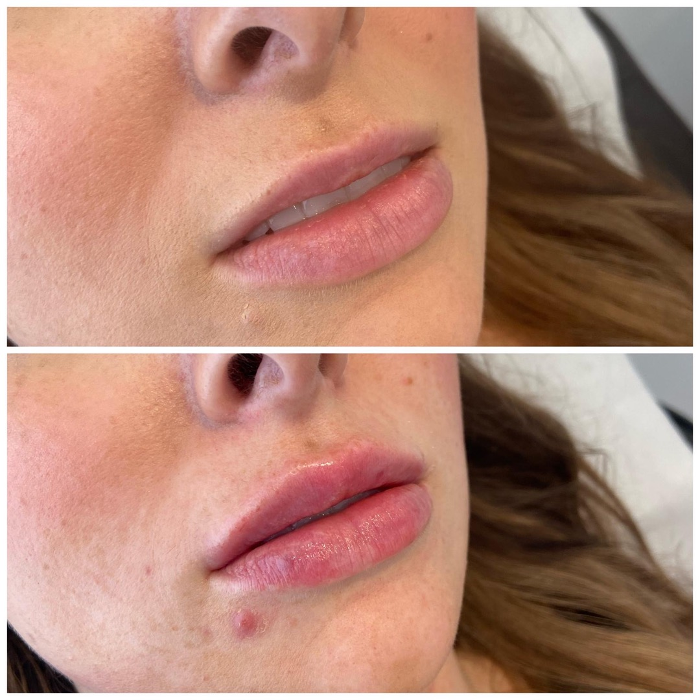
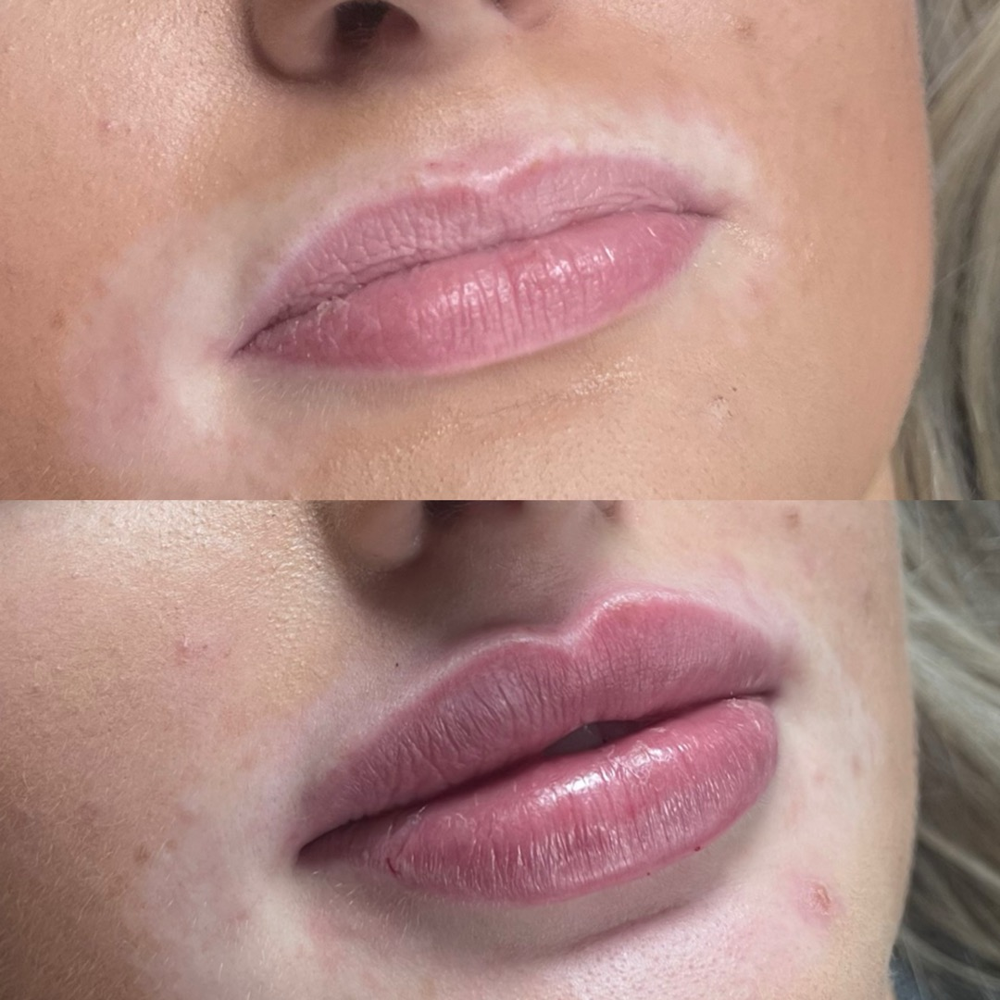

Lip Filler
Define. Shape. Hydrate.
Beautiful, natural lip enhancement — balanced, soft and tailored to your face. The look that still looks like you.
Lip filler is a quick, non-surgical treatment using hyaluronic acid dermal filler to gently enhance the lips — adding volume, shape, definition and hydration. At Layali Clinic, our goal is always a natural, balanced result, never "one-size-fits-all."
Real results
Genuine lip filler results at Layali Clinic — natural, balanced enhancement, tailored to each client.



Individual results vary. A consultation is required to confirm what will suit you.
What makes beautiful lips?
At Layali Clinic, we believe beautiful lips are not necessarily bigger lips. The most attractive lips are usually:
Beautiful lips are
- Balanced
- Soft
- Hydrated
- Proportionate to the face
- Natural in movement
- Appropriate for your features
Our goal is never to create a "one-size-fits-all" lip. Every treatment is tailored specifically to your face, proportions and aesthetic goals.
What is lip filler?
Lip filler is a hyaluronic acid (HA) dermal filler — a soft gel based on a sugar that occurs naturally in your skin. It's carefully injected into and around the lips to add volume, shape the border, balance symmetry and hydrate. Because it's HA-based, it is temporary and, if ever needed, can be dissolved.
How it works
Hyaluronic acid attracts and holds water, so it adds soft volume and structure while keeping the lips hydrated. Your practitioner places small amounts precisely to enhance your natural shape — building gradually rather than over-filling.
How much filler will I need?
One of the most common questions we're asked is "How many millilitres do I need?" The honest answer depends entirely on your starting point and the result you'd love.
0.5ml
Best for
- First-time clients
- Lip hydration
- Very subtle enhancement
- Soft definition
- Natural-looking results
"Fresh, hydrated, slightly enhanced."
1.1ml
Best for
- Clients wanting visible enhancement
- More noticeable volume
- Improved projection
- Enhanced shape
"A fuller version of your own lips."
More than 1ml
Not everyone requires multiple syringes. Where appropriate, we usually prefer building lips gradually over multiple appointments rather than overfilling in one session. Natural results are almost always achieved through patience rather than volume alone.
0.5ml vs 1.1ml — what's the difference?
Most clients aren't sure what these amounts actually look like. As a simple guide:
0.5ml — subtle & natural
- A soft, hydrated, gently enhanced lip
- Ideal for first-timers & a natural finish
1.1ml — fuller & defined
- More noticeable volume & shape
- A fuller version of your own lips
See our real results above — and we'll recommend the right amount for your lips at consultation.
Our philosophy
At Layali Clinic, less is often more. We prioritise:
We prioritise
- Facial harmony
- Natural movement
- Softness
- Balance
- Long-term lip health
We will always advise honestly if we feel a treatment is unsuitable, or if more filler would not improve your result.
Who is it for?
May suit you if you
- Want subtle, natural enhancement
- Are over 18
- Are in good general health
- Have realistic expectations
Not suitable if you
- Are pregnant or breastfeeding
- Have an active cold sore or infection
- Have a known allergy to the product
- Have certain autoimmune or bleeding conditions
- Have a big event in the next 2 weeks
Suitability is always confirmed at a face-to-face consultation, and treatment may be declined if it isn't safe or appropriate.
What lip filler cannot do
Lip filler can create beautiful enhancement, but it does have limitations. Lip filler cannot:
Lip filler cannot
- Permanently enlarge lips
- Correct severe asymmetry
- Stop the ageing process
- Replace surgery
- Guarantee perfect symmetry
- Guarantee a specific celebrity look
Our goal is improvement, not perfection.
Will I look fake?
This is one of the biggest concerns clients have. The answer is: only if that is the look you deliberately choose.
The majority of Layali Clinic clients request subtle, natural enhancement. Most people simply notice that your lips look healthier, more defined, better hydrated and better balanced — rather than obviously "filled."
Can lip filler be reversed?
Yes. The filler we use is hyaluronic acid based, so if necessary it can usually be dissolved using an enzyme called hyaluronidase. Although this is rarely required, many clients find reassurance in knowing the treatment is not permanent.
What happens during treatment?
- Consultation — we discuss your goals, assess your lips and face, review your medical history and agree a natural, balanced plan.
- Numbing — a numbing cream (and the filler often contains anaesthetic) keeps you comfortable.
- Treatment — small amounts of filler are placed precisely with a fine needle or cannula; usually around 30 minutes.
- After — you head straight home with your aftercare guide.
Most clients feel only mild pressure or a small scratch. Lips are sensitive, so some tenderness afterwards is normal.
Understanding swelling
Swelling is completely normal after lip filler. In fact, your lips will almost always appear larger immediately after treatment than they will once settled.
Day 1
Most swelling.
Day 2–3
Peak swelling.
Week 1
Significant improvement.
Week 2
Final settled result visible.
How long does it last?
Lip filler typically lasts 6–12 months depending on the product, the amount and your metabolism, after which a top-up maintains your look.
Risks & side effects
Lip filler is very popular and generally well tolerated, but it's an injectable treatment and carries real risks, which we explain fully (and you'll complete a medical history and consent form first).
Common & usually temporary
- Swelling
- Bruising
- Tenderness
- Small lumps or unevenness
- Temporary asymmetry while settling
Less common / serious
- Infection
- Cold sore reactivation
- Allergic reaction
- Persistent lumps or nodules
- Vascular occlusion (rare but serious)
- Need to dissolve or further treatment
Signs of vascular occlusion
Although rare, vascular occlusion is considered an emergency. Please contact Layali Clinic immediately if you experience:- Severe pain
- Increasing pain
- White, grey or mottled skin
- Delayed capillary refill
- Skin becoming cold
- Blistering
- Vision changes
Pricing
Introductory offer · a booking deposit secures your appointment and comes off your total · tap a treatment to book
Why choose Layali Clinic?
With us, you get
- A full consultation before treatment
- Individual treatment planning
- Medical history review
- Clinical photography
- A natural-result philosophy
- Ongoing aftercare support
- Review appointments available
- A fully trained & insured practitioner
- Honest advice on what will suit your face
Frequently asked questions
Will I look fake?
Only if that's the look you choose. Most of our clients want subtle, natural enhancement — people tend to notice healthier, more defined lips rather than "filled" ones.
What if I hate it?
HA filler can be dissolved with hyaluronidase if needed — though it's rarely required. We also build gradually, so you stay in control of the look.
How do I know what size to choose?
You don't have to — that's what your consultation is for. We assess your lips and face and recommend the right amount (often starting with 0.5ml or 1ml).
Will people notice?
With a natural approach, people usually just notice you look refreshed and well — not that you've had filler.
Does it hurt?
Numbing keeps you comfortable; most feel only mild pressure. Some tenderness afterwards is normal.
How much swelling will I get?
Swelling is normal and peaks around day 2–3, settling by ~2 weeks. Lips look bigger at first — wait two weeks to judge the result.
Book your consultation
Book in so we can assess your lips, understand the look you'd love, and plan a natural, balanced result that suits your face.
Layali Clinic · Leyton, London · 07787 708200 · info.lushlips@gmail.com
Layali Clinic · 442 Lea Bridge Road, Leyton, E10 7DT · 07787 708200 · info.lushlips@gmail.com · Privacy Notice